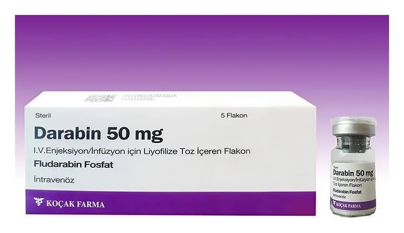

Darabin 50 mg IV Enjeksiyon/İnfüzyon İçin Liyofilize Toz İçeren Flakon ,5 Flakon

Ne için kullanılır
KT · Bölüm 1 DARABİN, her bir flakonda 50 mg enjeksiyonluk veya infüzyonluk çözelti tozu içermektedir.
DARABİN, bazı kanser tiplerindeki kanser hücrelerinin büyümesini engellemek için kullanılan bir ilaçtır.
DARABİN 50 mg IV enjeksiyon/infüzyon için liyofilize toz içeren flakon; daha önce B hücreli kronik lenfositik lösemi (KLL) tedavisi almamış hastaların tedavisinde, daha önce en az bir standart kanser tedavisi (alkilleyici ajan tedavisi) almış ancak cevap vermemiş B hücreli kronik lenfositik lösemi (KLL) hastalarının tedavisinde, daha önce en az bir standart kanser tedavisi (alkilleyici ajan tedavisi) aldığı sırada veya sonrasında ilerleme göstermiş B hücreli kronik lenfositik lösemi (KLL) hastalarının tedavisinde kullanılır.